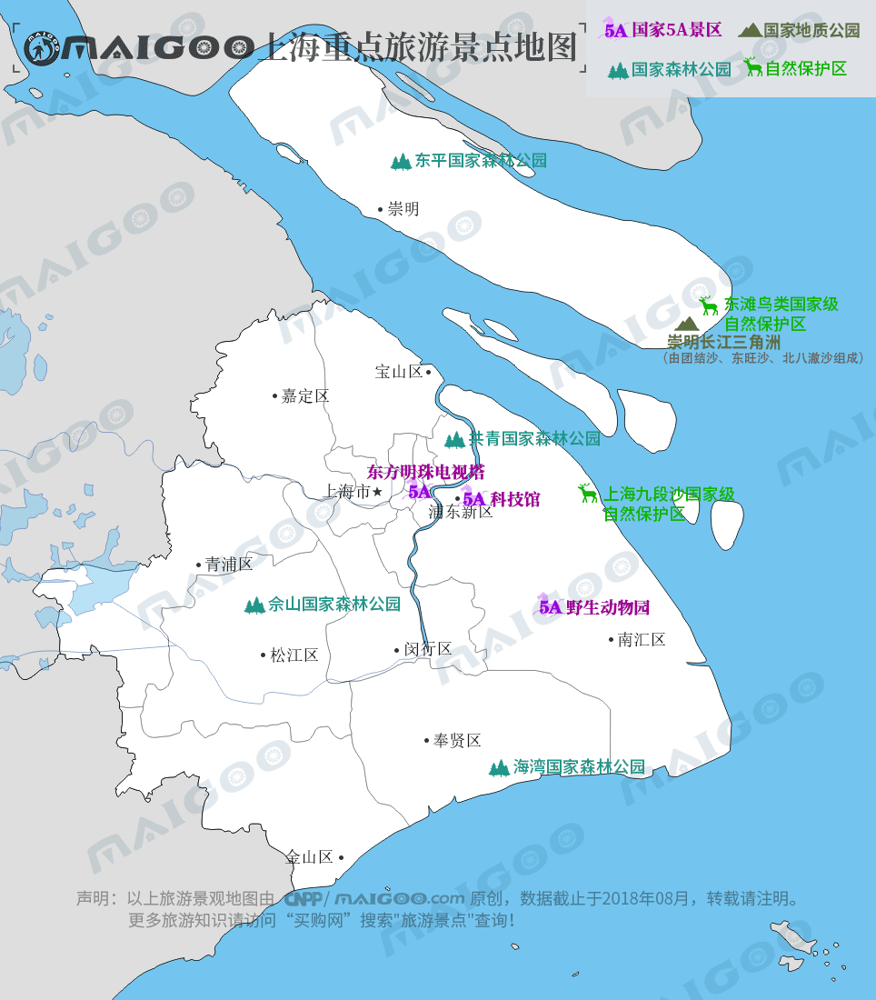

| | | | | |
| - | - | - | - | - |
|<b>别名</b>|申城、魔都、沪上、东方巴黎||<b>著名景点</b>|外滩、豫园、南京路、人民广场、静安寺、新天地、迪士尼乐园等|
|<b>行政区类别</b>|直辖市||<b>机 场</b>|上海虹桥国际机场、上海浦东国际机场|
|<b>所属地区</b>|中国华东||<b>火车站</b>|上海站、上海南站、上海虹桥站、上海西站等|
|<b>下辖地区</b>|16个市辖区||<b>车牌代码</b>|沪A －沪N|
|<b>电话区号</b>|021||<b>GDP</b>|30133.86亿元（2017年）|
|<b>邮政区码</b>|200000||<b>人均GDP</b>|124606元（2017年）|
|<b>地理位置</b>|长江入海口南岸，东海之滨||<b>著名人物</b>|胡适、顾维钧、厉麟似、张爱玲等|
|<b>面 积</b>|6340平方公里||<b>著名高校</b>|复旦、交大、同济、华师、东华等|
|<b>人 口</b>|2418.33万（2017年常住人口）||<b>市委书记</b>|李强（中共中央政治局委员）|
|<b>方 言</b>|吴语-太湖片-苏沪嘉小片-上海话||<b>行政区划代码</b>|310000|
|<b>气候条件</b>|亚热带季风气候||<b>市 长</b>|应勇（中共中央委员）|
|-|-||<b>市树市花</b>|法国梧桐、白玉兰|
| <b>上海生活文化</b> | <b>上海特色文化</b> | <b>上海曲艺文化</b> | <b>上海建筑文化</b> | <b>上海宗教文化</b> |
| - | - | - | - | - |
| <a href="javascript:;" onclick="live(this);">习俗/民俗</a> | - | <a href="javascript:;" onclick="art(this);">上海沪剧</a> | <a href="javascript:;" onclick="building(this);">外滩</a> | - |
| <a href="javascript:;" onclick="live(this);">方言文化</a> | - | <a href="javascript:;" onclick="art(this);">独角戏</a> | <a href="javascript:;" onclick="building(this);">上海弄堂</a> | - |
| <a href="javascript:;" onclick="live(this);">节日文化</a> | - | <a href="javascript:;" onclick="art(this);">浦东说书</a> | <a href="javascript:;" onclick="building(this);">上海庙宇</a> | - |
| <a href="javascript:;" onclick="live(this);">嫁娶文化</a> | - | - |-|-|
| <a href="javascript:;" onclick="live(this);">饮食文化</a> | - | -|-|-|
| <a href="javascript:;" onclick="live(this);">上海禁忌</a> | - |-| -|-|
|<a href="javascript:;" onclick="live(this);">海派文化</a>| - |-|-|-|
## <i class="fa fa-file-text-o"></i>&nbsp;目录（Table of Contents）
+ [I. 总路线图（暂无）](#one)
+ [II. 景点](#two)
+ [III. 路线规划（暂无）](#three)
<h2 id="two"><i class="fa fa-star-o"></i>&nbsp;景点</h2>
